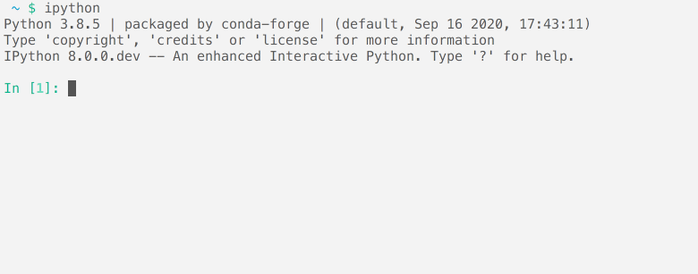
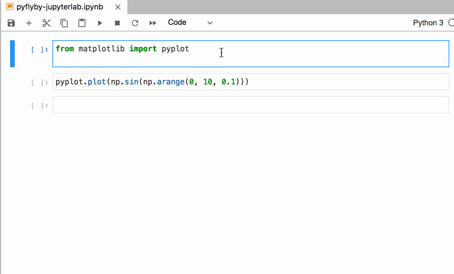
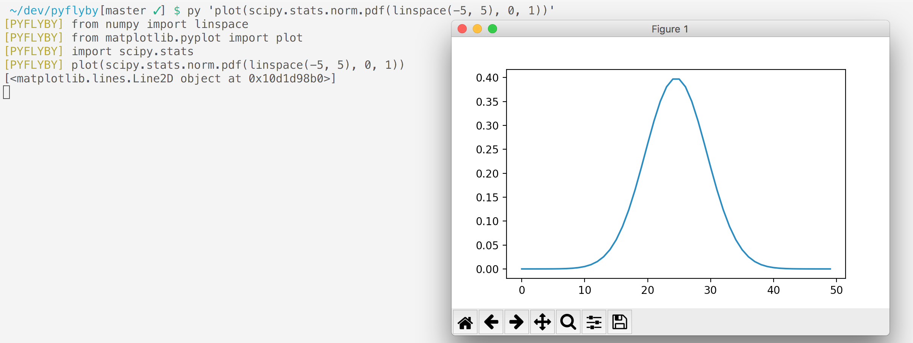

Pyflyby: Improving Efficiency of Jupyter Interactive Sessions
Interruption hinder productivity more than interruption. A notification, random realization, or unrelated error can derail one's train of thought when deep in a complex analysis – a frustrating experience.
In the software development context, forgetting to import a statement in an
interactive Jupyter session is such an experience. This can be especially
frustrating when using typical abbreviations, like np, pd, plt, where the
meaning is obvious to the human reader, but not to the computer. The
time-to-first-plot, and ability to quickly cleanup one's notebook afterward
are critical to an enjoyable and efficient workflow.
In this blogpost we present pyflyby, a project and an extension to IPython and JupyterLab, that, among many things, automatically inserts imports and tidies Python files and notebooks.
What is pyflyby?
Pyflyby is a set of tools designed to improve interactive and non-interactive workflows in Python. Pyflyby provides a number of utilities and extensions aimed at making day-to-day work in Python faster and simpler.

Autoimport
One of pyflyby's key capabilities is automatic importing of commonly used modules and objects, leading to simpler, faster, and less disruptive coding. In a new session, for example, one can type:
sin(arange(10))
Pyflyby will then hook into the execution mechanism of Python, execute the correct import, and confirm with a clear message:
[PYFLYBY] from numpy import arange
[PYFLYBY] from numpy import sin
Pyflyby will also do so when running a command line file via
the py executable replacing python.
With the jupyterlab-pyflyby extension, imports will be executed and inserted in the first cell of one's notebook:

tidy-import
In addition to the extension that can seamlessly import the right libraries while exploring, another pyflyby feature helps to maintain scripts and notebooks with explicit and correct imports.
Pyflyby displays the tidy-import command line tool to gather, insert, and
format imports in Python files. This is similar to tools such as
black and
isort, but with different styling options and
with the ability to infer missing imports.
tidy-import includes the imports to pandas and matplotlib, as in the example
below, and queries whether to update the file:
$ tidy-imports example.py
[PYFLYBY] example.py: added 'import pandas as pd'
[PYFLYBY] example.py: added 'from matplotlib import pyplot'
--- example.py 2021-03-08 10:33:04.000000000 -0800
+++ example.py 2021-03-08 10:33:18.000000000 -0800
@@ -1,2 +1,7 @@
+from matplotlib import pyplot
+import pandas as pd
+
data = pd.read_csv("./data/base-pop-2015.csv")
pyplot.plot(data.population)
Replace example.py? [y/N]
Other utilities
Pyflyby contains a number of other utilities to improve the efficiency of manipulating and executing Python code. (Please refer to pyflyby's README for additional information.)
py is one such example. It is a flexible tool that can be used either to start
IPython or to execute commands quickly from the developer's shell without the
need for imports. It supports a range of syntax options, allowing for quick
calculation and graph plotting.
- Without any parameters,
pywill start IPython with the pyflyby extension activated. - With space-separated arguments,
pywill attempt to interpret each argument as a Python function call with the right imports:
$ py np.random.normal 0 1
[PYFLYBY] import numpy as np
[PYFLYBY] np.random.normal(0, 1)
-0.027577422117386
- When more control over values is necessary,
pywill run a Python expression:
$ py 'plot(scipy.stats.norm.pdf(linspace(-5, 5), 0, 1))'
[PYFLYBY] from numpy import linspace
[PYFLYBY] from matplotlib.pyplot import plot
[PYFLYBY] import scipy.stats
[PYFLYBY] plot(scipy.stats.norm.pdf(linspace(-5, 5), 0, 1))
[<matplotlib.lines.Line2D object at 0x132981940>]

find-import , another utility available in pyflyby, can be deployed to find a
particular function across many libraries by returning the relevant import. For
example:
$ find-import norm
from scipy.stats.distributions import norm
Notes on pyflyby codebase
The Pyflyby codebase provides a window into advanced data structures and programming paradigms. Its use of modules and programming concepts is unusual relative to those found in more classical data science-focused libraries. For example:
-
Pyflyby will conduct non-trivial manipulation of the Python Abstract Syntax Tree (AST), which represents code written in tree form. Pyflyby uses AST to find and insert missing imports, and it does so even as AST's exact representation changes with almost every minor release.
-
Pyflyby demonstrates the use of Aspect-Oriented programming, which highlights the flexibility of the Python programming model.
Conclusion
Pyflyby's utilities are designed to improve developer efficiency and materially reduce the impact of interruption on productivity. Its value, however, is broader than that. Pyflyby expands what one is capable of doing within the Python ecosystem and has helped identify a number of limitations and bugs in Python and IPython over time.
How to get pyflyby
Pyflyby is available on GitHub or, for terminal IPython users:
$ pip install pyflyby
$ py pyflyby.install_in_ipython_config_file
JupyterLab users can also install the JupyterLab Extension, which is notebook-aware and enables even more features.
Acknowledgements
Pyflyby was created by Karl Chen and is supported by the D. E. Shaw group in collaboration with Quansight.